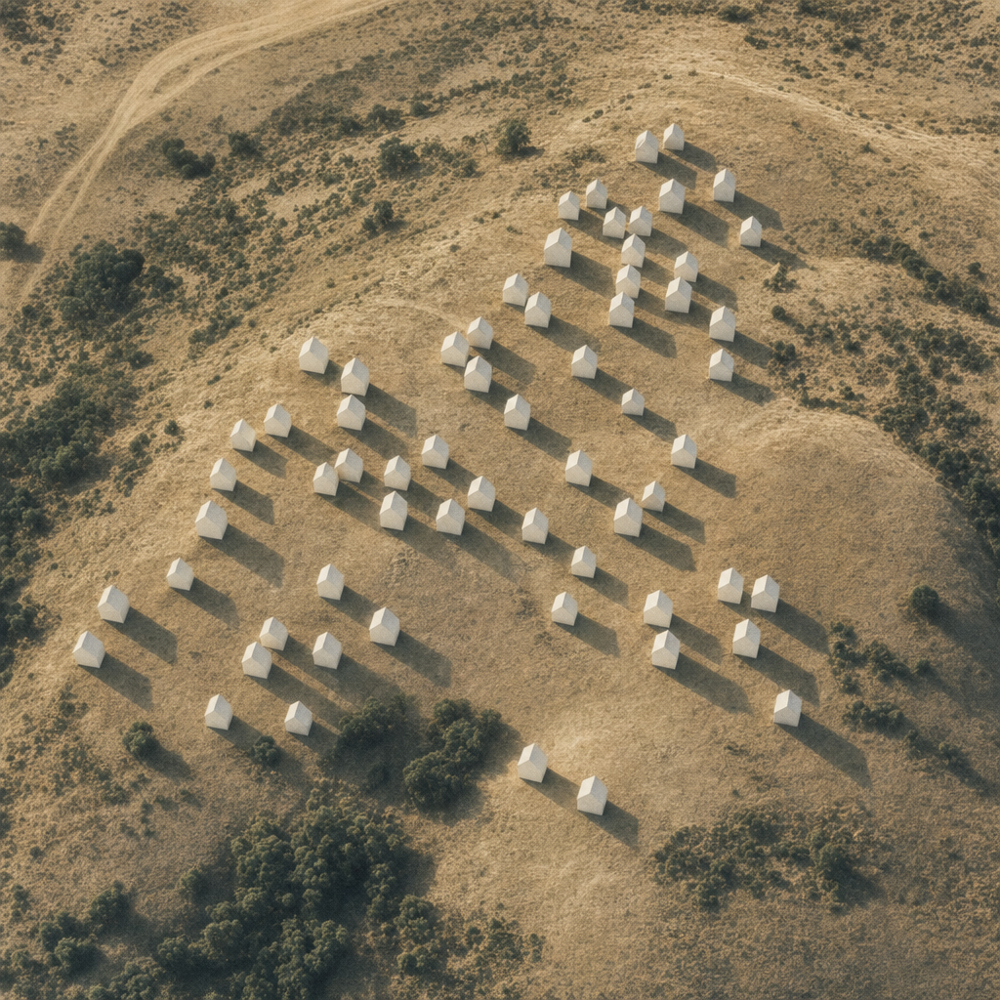

The Holy Land
The line that quietly crossed
Israel's settlement map is a slow-motion arithmetic problem. The population beyond the 1967 Green Line has tripled in two decades, the bulk of growth has gone to the rings Israel expects to keep, and somewhere around 2018 the Jewish majority of the entire Holy Land quietly disappeared.
Some time in 2018, a line crossed
Some time in 2018, between the Mediterranean and the Jordan river, Arabs began to outnumber Jews. The dataset puts the crossover at 6,669,571 Arabs and 6,669,138 Jews — a gap of 433 people in a territory of 13 million.
In 1998 the Jewish lead was 852,725. By 2017 it had narrowed to 33,890. The line was already a hairsbreadth before it crossed.
The Economist's framing in 2019 called this a trilemma: Israel can be Jewish-majority, democratic, and in control of the entire Holy Land — but only two of the three at once. The data is a map of which corner of that triangle is dissolving.
How the settler count tripled while almost no one moved
In 1998 the Jewish population of the West Bank — not counting East Jerusalem — was 165,540. By 2021 it was 506,558. That is a 3.06x multiple in 23 years, and a net 341,018 people added.
Inside Israel proper the Jewish population grew 1.41x over the same period. East Jerusalem grew 1.47x. Settler growth in the West Bank was 2.17 times as fast as growth inside Israel itself — driven not by fertility alone but by ongoing construction, internal migration, and the heavy ultra-Orthodox makeup of large bloc settlements.
One way to feel the scale: in 1998, 6.8% of all Jews living between the river and the sea lived beyond the Green Line. By 2021, 10.5% did. One in ten.
A map of distance from a green pencil line
The Green Line is the 1949 armistice line — named, literally, for the green grease pencil it was drawn with. Since 1967 it has been the de-facto reference border in every serious peace plan: settlements close to the line are inside what negotiators call 'consensus blocs'; settlements deep beyond it are the ones any agreement would require evacuating.
The Economist's third file slices the West Bank settler population into four rings around that line, plus East Jerusalem on its own. In 2021 the breakdown across all 739,682 Jews living beyond the line was: East Jerusalem 31.5%, 0-2.5 km 24.3%, 2.5-5 km 18.8%, 5-15 km 15.2%, more than 15 km away 10.2%.
Look at the West Bank alone. Of the 506,558 settlers there, 62.8% live within 5 km of the Green Line — the strip that nearly every Israeli peace plan since Olmert assumes Israel would keep through a one-for-one land swap. Only 14.9% live deeper than 15 km, the population that any two-state agreement would have to relocate.
The fastest growth happened where evacuation is least likely
The closest ring grew the most violently. The 0-2.5 km band — the strip immediately over the Green Line — went from 34,418 settlers in 1998 to 179,545 in 2021. That is a 5.22x multiple, the largest in the data. The 5-15 km band grew 2.85x, the 2.5-5 km band 2.48x, and the deepest 15+ km bucket the slowest at 2.13x.
The same shape shows up in the absolute numbers. Of the 341,018 settlers added to the West Bank between 1998 and 2021, two-thirds — 66.8%, or 227,875 people — moved into land within 5 km of the line. Only 11.8% of the growth happened deeper than 15 km. The deepest, hardest-to-evacuate settlements are the slowest-growing.
That sounds, at first, like good news for any future peace plan: the bulk of the new arrivals are precisely where everyone agrees Israel will likely stay. But it cuts the other way too. The blocs are now too large, too established, too residential to imagine being anything other than permanent — and the political map is being drawn by the construction crews, not the negotiators.
East Jerusalem, in a column of its own
East Jerusalem is in its own column for a reason. Israel formally annexed it in 1980 through the Jerusalem Law and applies Israeli civilian law there; the UN Security Council declared the annexation null and void. The result is a population that Israel counts as Israeli but most of the world counts as occupied.
On the data, the Jewish population of East Jerusalem grew from 158,155 in 1998 to 233,124 in 2021 — a 47.4% increase. It grew the slowest of any region in absolute multiples, but it started from the largest base.
In 2021, East Jerusalem alone held 31.5% of every Jew living beyond the 1967 line — more than any single West Bank distance bucket. If the whole story of settlement is one of expanding rings, East Jerusalem is the one that does not even pretend to follow the geometry.
Ninety-two Gazas

In 2005 Israel evacuated its settlers from Gaza. The operation was a national trauma. It involved roughly 8,000 people.
By 2021 the West Bank held 506,558 settlers — 63.3 Gaza disengagements' worth. East Jerusalem held 29.1 more. The total Jewish population beyond the 1967 line came to 92.5 times the 2005 evacuation.
Even if you look only at the 'deepest' settlers — the ones more than 15 km from the line, the ones any two-state agreement would, on paper, require to leave — there were 75,727 of them in 2021. That alone is 9.5 Gaza disengagements stacked on top of one another.
What the arithmetic forces
Both populations are still growing. The Arab total reached 7.16 million in 2021, with the West Bank at 37.9% of that, Gaza at 29.0%, Israeli Arabs at 27.9%, and East Jerusalem at 5.2%. The Jewish total reached 7.03 million.
Neither line has stopped. The Arab line has been the steeper one for most of the past decade. On the dataset's projections, the gap that opened in 2018 is widening.
These last few years are projections — but the trajectory under them is twenty years of measured data. The arithmetic of the trilemma does not require any new political decision to keep tightening; it tightens by itself, with every construction tender approved and every birth recorded, on either side of a green pencil line drawn three quarters of a century ago.